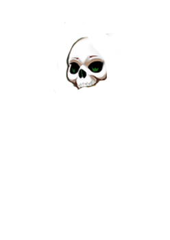
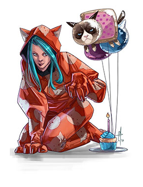

Delilah Pavoni
HELLO!
I'm Delilah - gamedev üéÆ and software developer. VR is my soft spot since 2006, when I first got to use it.
My tool of choice for creating interactive experiences is (currently) Unity. Some of my favourite projects can be seen HERE
I like (statically) typed languages and particle systems.
Currently obsessed with plants, cats, pizza and shaders üåê‚ú®.
Based in Amsterdam, NL


I'm Delilah - gamedev üéÆ and software developer. VR is my soft spot since 2006, when I first got to use it.
My tool of choice for creating interactive experiences is (currently) Unity. Some of my favourite projects can be seen HERE
I like (statically) typed languages and particle systems.
Currently obsessed with plants, cats, pizza and shaders üåê‚ú®.
Based in Amsterdam, NL


WHAT I DO
I mostly do programming and I enjoy wholesome projects with a purpose. And spooky things.
I build experiences - be it games, interactive software or installations, AR/VR. My tool of choice is (currently) Unity and C#. I do explore other options as well and play with other technologies when I have the capacity to do so.
Some of my tasks are:
- Help with estimates and projects requirements definitions
- Build Prototypes and Proof of Concept
- Implementing core (/game mechanic)
- Implement design / UI / audio
- Implement third party APIs for various purposes
- A task I never did? It's ok, give me some time, I'll figure it out.
I like GIT, I use tickets and I can roll spaghetti very fast.
I do also value and keep learning about communication, leadership, diversity and how to best support people around me. I advocate for inclusivity and embracing a wide range of perspectives and backgrounds.
